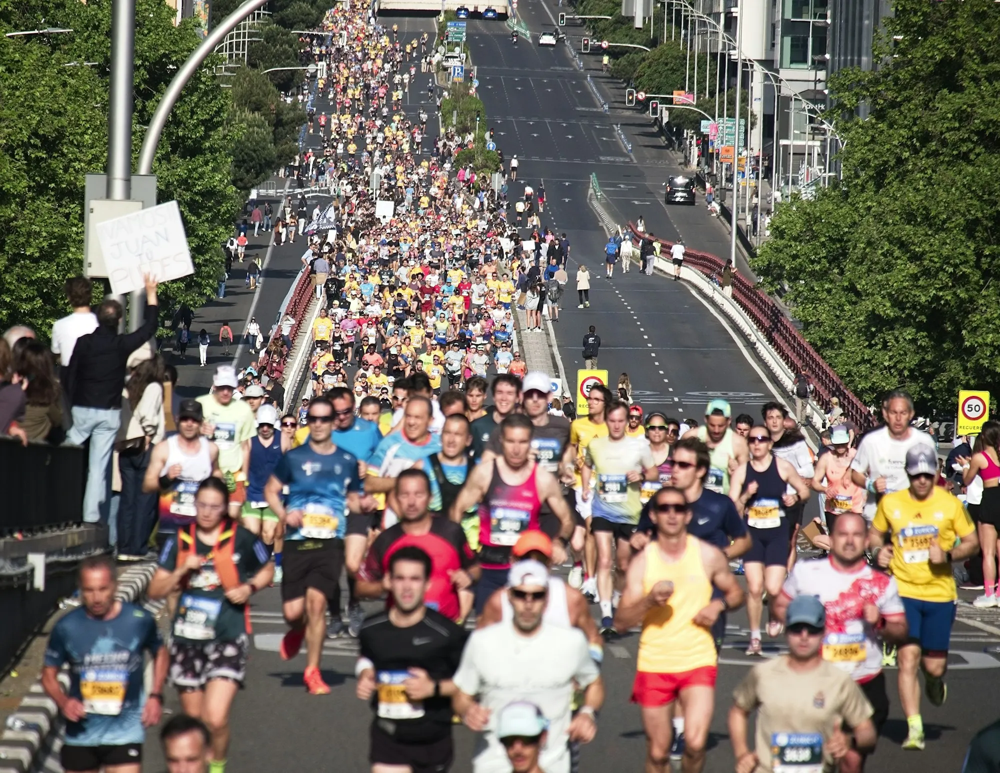

- Start from 5K to 8K. Run three times a week and grow the long run from 8 km to 18 km, with a lighter week every fourth week.
- Cut the distance in the last two weeks (taper), keep the pace conversational, and try your food and drink in training, not on race day.
- See a doctor first if you have any health condition, and stop for chest pain, dizziness or pain that gets worse.
If you can run 5K to 8K now, twelve weeks is enough time to prepare for your first half marathon (21.1 km). The plan is to run three times a week, build one long run each week, ease off in the last two weeks, and go slowly on the day.
Before you start
Published plans assume some background. Nuffield Health's 12-week beginner plan expects you to have completed 5K and 10K, suggests at least 12 weeks between starting and race day, and recommends a check-up with a GP first, especially if you have an underlying condition. If you are not yet at 5K, begin with our 5K plan and then the 10K plan. If you can run 5K to 8K, you can use the table below, which starts a little lower than the Nuffield plan.
This table is our own, built on the same ideas as published plans. It is a guide, not a prescription; if you miss a week or feel worn out, repeat a week.

The 12-week table
Run on three non-consecutive days, for example Tuesday, Thursday and Sunday, with the long run on Sunday. All runs are easy: at a pace where you can talk. Rest, walk or stretch on other days.
| Week | Easy run 1 | Easy run 2 | Long run | Note |
|---|---|---|---|---|
| 1 | 30 min | 30 min | 8 km | Build |
| 2 | 30 min | 35 min | 9 km | Build |
| 3 | 35 min | 35 min | 10 km | Build |
| 4 | 30 min | 30 min | 8 km | Lighter week |
| 5 | 35 min | 40 min | 12 km | Build |
| 6 | 40 min | 40 min | 13 km | Build |
| 7 | 40 min | 45 min | 15 km | Build |
| 8 | 35 min | 35 min | 11 km | Lighter week |
| 9 | 40 min | 45 min | 16 km | Build |
| 10 | 40 min | 45 min | 18 km | Longest run |
| 11 | 35 min | 30 min | 12 km | Taper |
| 12 | 25 min | 20 min | Race: 21.1 km | Race week |
How the long run builds
The long run is the heart of the plan. It rises by one to three kilometres a week, and every fourth week it drops, which gives your body time to adapt. Run it slower than you think you should. Nuffield Health's plans make the same point: keep a pace you can hold the whole way so you do not burn out. Most plans stop short of the full distance in training; Nuffield's beginner half peaks at 12 miles (about 19 km), and ours peaks at 18 km.

Taper: the last two weeks
A taper means cutting your distance before race day so your legs are fresh. In weeks 11 and 12 the long run falls to 12 km and then to the race itself, and the easy runs get shorter. Do not add extra runs to "make up" for anything, and do not run the day before the race; Nuffield notes that a run the day before has no positive effect on your performance.
Race week and race day
- Check the weather and what to wear. Heat is the main risk in India; see running in Indian heat and monsoon.
- Pack the night before: shoes, bib, watch, water, food and a charged phone.
- Wear what you have trained in. Nothing new on race day, especially shoes; see running shoes for Indian roads.
- Eat breakfast about three hours before the start, something light and familiar.
- Start slowly. Aim for about 70 to 80 percent of your maximum effort, where you could still hold a light conversation, and save some energy for the last few kilometres. Do not let the crowd's excitement change your plan.
- Walk through water stations if you need to. It is not a failure.
To find a race, see marathons and half marathons in India.
Fuelling basics
For long runs and races, the usual advice from sports dietitians is to take on carbohydrate as you run. One widely quoted guide, from a sports dietitian in Runner's World, is 30 to 60 g of carbohydrate per hour, starting in the first 30 minutes and repeating every 30 to 40 minutes. The same article gives a general fluid range of 300 to 800 ml an hour, adjusted for temperature, how much you sweat and thirst, and points out that sweat rates vary widely. It is a marathon guide, but the principle applies to longer half-marathon efforts too. The most important rule from both sources is to try everything in training: gels, chews, drinks and electrolytes. Do not try anything new on race day. For individual advice, talk to a sports dietitian or doctor, especially if you have diabetes or another condition.
When to see a doctor
- Before you start, if you have a heart, lung or joint condition or any other worry.
- Stop and get help for chest pain, severe breathlessness, fainting or dizziness.
- See a doctor or physiotherapist if pain gets worse as you run, or lasts more than a few days. See beginner running injuries.
- In the heat, stop for headache, nausea, heavy sweating and clammy skin. The NHS says heatstroke, with confusion or hot skin that is not sweating, is an emergency.
Running with a group makes long runs easier; see how to join a run club. If this goes well, the next step is the 16-week marathon plan.
General information, not medical advice.
Sources
- Nuffield Health: 12-week half marathon training plan for beginners
- Runner's World Australia: Fuelling for a marathon
- Nuffield Health: 16-week marathon training plan (taper and rest advice)
- NHS: Heat exhaustion and heatstroke
Quick questions
Can a beginner run a half marathon in 12 weeks?
If you can already run 5K to 8K and your doctor is happy, 12 weeks is a common plan length. Nuffield Health suggests at least 12 weeks between starting and race day, for runners who have done 5K and 10K.
How far should my longest training run be?
In our plan, 18 km. Published plans differ: the Nuffield Health plan peaks at 12 miles (about 19 km). You do not need to run the full 21.1 km in training.
What should I eat before a half marathon?
Nuffield Health advises a light, satisfying breakfast about three hours before the start, and sticking to foods and drinks you have already tried in training.
What pace should I run?
Run at about 70 to 80 percent of your maximum effort, where you could hold a light conversation, and do not start too fast.